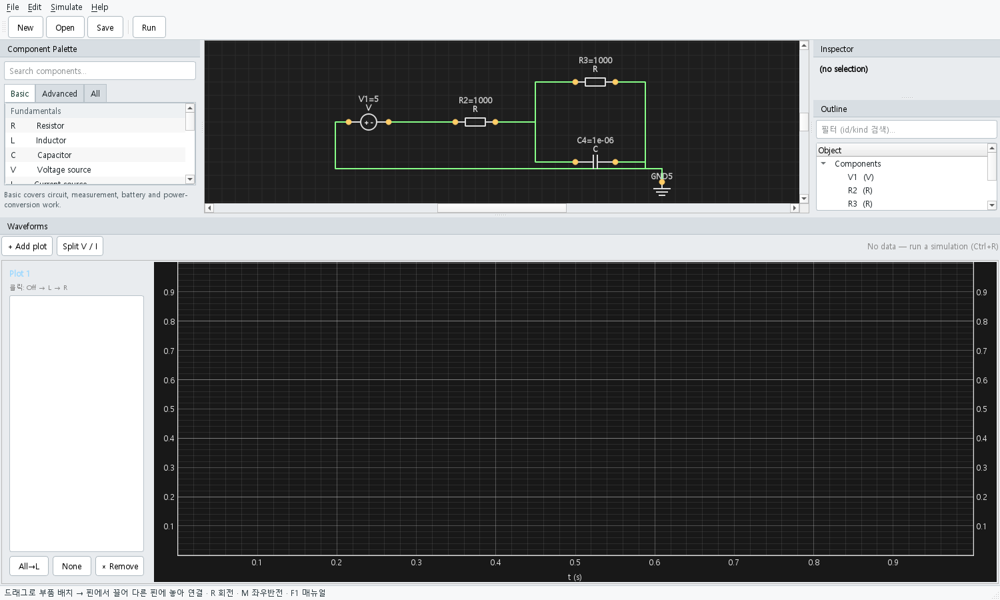
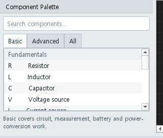
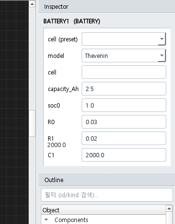
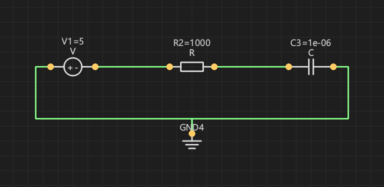
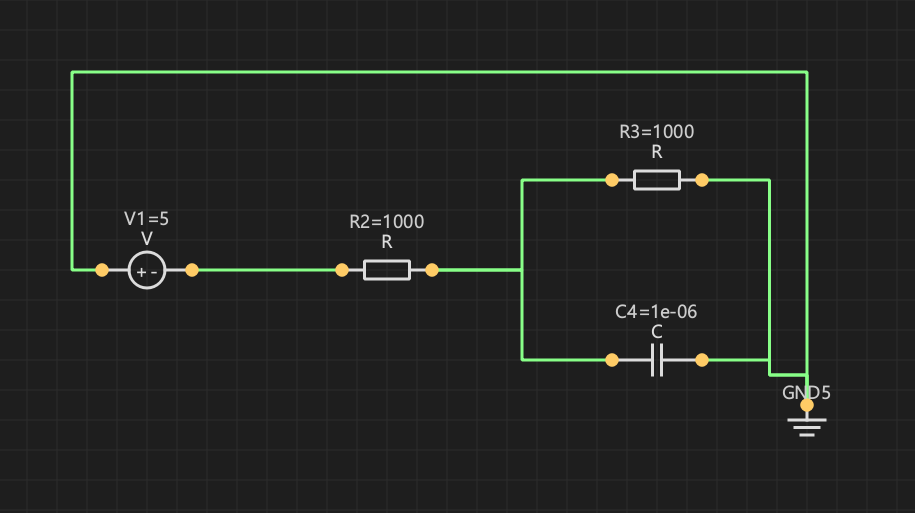
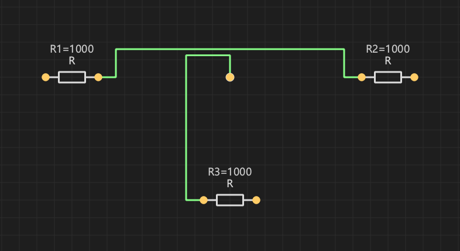
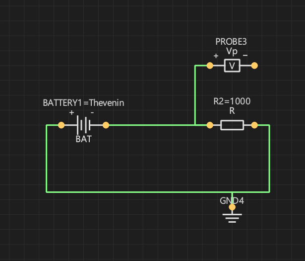
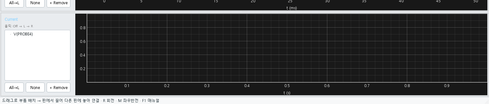

BatSim은 PSpice 스타일의 회로 편집기와 Python 기반 배터리 / BMS 시뮬레이션 엔진을 결합한 도구입니다. 언제든 F1으로 이 매뉴얼을 다시 열 수 있습니다. GUI · 명령줄(CLI) · 확장(사용자 모델, 셀 데이터, 외부 SOC 알고리즘)을 모두 다룹니다.

BatSim은 두 가지 핵심을 결합합니다.


V, R, C,
GND를 캔버스로 드래그합니다.V를 클릭 → 인스펙터에서 V 값을
5로 변경 후 Enter.t_end = 0.05,
dt = 0.0005로 실행.
| 키 | 동작 |
|---|---|
| F1 | 이 매뉴얼 열기 |
| Ctrl+N / O / S | 새 / 열기 / 저장 프로젝트(.batsim) |
| Ctrl+R | 시뮬레이션 다이얼로그 |
| Ctrl+C / V | 선택 복사 / 붙여넣기(부품 + 그 사이 와이어). 붙여넣은 항목은 선택 상태로 유지되어 곧바로 드래그하면 그룹째 이동합니다. |
| Ctrl+Z / Y (Ctrl+Shift+Z) | 되돌리기 / 다시 실행. 부품·와이어 추가/삭제, 붙여넣기, 회전·반전, 위치 이동까지 추적됩니다 (스택 200 단계). |
| Ctrl+G | 선택을 이름 있는 블록으로 저장 |
| R | 선택 90° 회전 (와이어 유지) |
| M | 선택 좌우 반전 |
| Delete / Backspace | 선택된 부품 또는 와이어 삭제 |
| Esc | 진행 중인 와이어 취소 |
| Ctrl+휠 | 캔버스 확대 / 축소 |
| 마우스 | |
| 핀에서 드래그 | 와이어 시작 |
| 부품 우클릭 | 컨텍스트 메뉴 — 회전 / 반전 / 삭제 |
| 빈 영역 드래그 | 러버밴드 다중 선택 |
| 와이어의 주황색 핸들 드래그 | 해당 segment를 수직 방향으로 슬라이드 |
| 부품 | 핀 | 주요 파라미터 | 비고 |
|---|---|---|---|
| R (저항) | 2 | R [Ω] | |
| L (인덕터) | 2 | L [H] | |
| C (커패시터) | 2 | C [F] |
과도 해석 초기 전압 = 0 V. |
| V (전압원) | 2 | V [V] |
기본 DC. 핀 0 = −, 핀 1 = +. |
| I (전류원) | 2 | I [A] |
관습적 전류 방향: 핀 0 → 핀 1(소자 내부). |
| SWITCH | 2 | closed |
불리언(인스펙터에서 체크박스). |
| DIODE | 2 | Is, n, Vt |
애노드 = 핀 0, 캐소드 = 핀 1. |
| MOSFET (NMOS) | 3 (D, G, S) | Kp, Vth, lambda |
square-law 모델. |
| BATTERY | 2 | model, cell, capacity_Ah… |
핀 0 = −, 핀 1 = +. §10 참조. |
| PROBE | 1 | — | 전압 프로브; 닿은 노드를 V(P1)로 표시. |
| IPROBE | 2 | — | 직렬로 삽입 → I(IP1) 신호 추가. |
| GND | 1 | — | 기준 노드. 회로당 1개 이상 필수. |
| JUNCTION | 1 (+ tap) | — | 와이어 위에 다른 와이어를 놓으면 자동 생성(병렬 분기). |
두 가지 방식 모두 사용 가능:
드래그 중에는 직각(Manhattan) 미리보기 선이 커서를 따라옵니다.
라우터는 다른 모든 부품을 장애물로 취급하고 필요 시 직각 우회로를 선택합니다. 출발 / 도착 부품도 약하게 장애물로 포함되어, 와이어가 부품 본체를 가로지르지 않고 핀을 통해서만 들어옵니다. 예를 들어 좌측 전압원의 오른쪽 핀과 R-(R||C) 회로 우측을 연결할 때, 가운데 R을 가로지르지 않고 아래쪽으로 우회합니다.

와이어를 선택하면 흰색으로 변하면서 모든 내부 segment의 중간에 주황색 사각형 핸들이 표시됩니다. 핸들을 드래그하면:
기존 와이어에서 분기를 만드는 방법:

두 와이어가 교차할 때:
부품을 드래그해 옮기면 와이어가 자동으로 따라옵니다. 이동은 그리드에 스냅됩니다.
BATSIM: 접두사 뒤에 JSON 형식으로
저장됩니다."블록"은 저장된 서브-회로로, 나중에 어떤 캔버스에든 다시 떨어뜨릴 수 있습니다.
~/.batsim/blocks/<이름>.json에 저장됩니다.float으로
변환되고, 지수 표기(1e-3)도 가능합니다.data/cells/의 JSON에서 직접 편집하세요.BATTERY 부품은 모델(방정식 집합)과 선택적 셀 프리셋 (실제 셀의 파라미터 묶음)을 결합합니다.
| 드롭다운 | 의미 |
|---|---|
| cell (preset) | data/cells/ 또는
~/.batsim/data/cells/의 모든 JSON. 선택하면
capacity, R0, OCV 표 등이 자동 채워지며 모델 이름도 함께
설정됩니다. 63 Ah NCM/LFP 프리셋이 기본 포함됩니다. |
| model | 플러그인 레지스트리에 등록된 모델. 빌트인: Rint, Thevenin (1-RC), n-RC, SPM, DataDriven. |
| chemistry | Rint / Thevenin / n-RC에서 사용하는 OCV 곡선을 화학별로
선택합니다. NCM(완만한 slope, 3.50→4.20 V),
LFP(20–90% 구간 ~3.30 V plateau), NCA,
LCO, LTO(1.5–2.85 V), Generic.
DataDriven 모델은 셀의 ocv_table을 직접
사용하므로 이 값은 무시됩니다. |
V_t = OCV(SOC) − I·R0.Grid /
PLoad / ILoad)를 배터리에 연결하면 BUS의
음극 핀이 자동으로 시스템 0 V 기준이 됩니다 — GND 심볼이 따로 없어도
됩니다.mode 드롭다운으로
전환합니다.4-핀(p+, p−, s+,
s−) 컴포넌트로, V(p+)−V(p−) = n · (V(s+)−V(s−))
관계를 강제합니다 (n = 1차/2차 권선비). 전력 균형으로
I_s = −n · I_p가 자동 성립합니다.
실제 ESS와 같은 GRID(AC) → TR → PCS(AC↔DC) → BATTERY
구성을 그대로 그릴 수 있습니다.
V_rms,
freq [Hz], phase_deg, bias
파라미터를 가집니다. pin 1(중성선)은 자동으로 노드 0에 접지됩니다.| 모드 | 설명 | 주요 파라미터 |
|---|---|---|
V_DC | DC 측 정전압 (CV 충전기) | V_DC_set |
I_DC | DC 측 정전류 (CC 충전기) | I_DC_set |
P_DC | DC 측 정전력 | P_DC_set |
CC | 정전류 (프로파일) | I_set |
CV | 정전압 (프로파일) | V_set |
CP | 정전력 (프로파일) | P_set |
CCCV | CC → V_max 도달 시 CV → |I|≤I_term 종지 | I_set, V_max, I_term |
CPCV | CP → V_max 도달 시 CV → |I|≤I_term 종지 | P_set, V_max, I_term |
CYCLE | 스텝 리스트 순차 실행 (충방전 사이클) | cycle_steps (JSON), cycle_repeat |
부호 규약 — + = 충전, − = 방전.
cycle_steps는 JSON 배열로, 각 스텝마다 위 단일 모드 중
하나와 종지 조건(max_time, V_max,
V_min, I_term)을 지정합니다. 예:
[{"mode":"CC","I":10,"V_max":3.6,"max_time":600},
{"mode":"REST","time":300},
{"mode":"CP","P":-50,"V_min":2.5,"max_time":900}]
cycle_repeat=N으로 N회 반복(0=무한) 가능합니다.
AC 측은 η(eta) 손실을 반영한 등가 정전력
부하로 처리합니다. PCS의 AC−, DC− 두 핀은 모두 자동 접지되며
v1에서는 갈바닉 절연이 모델링되지 않습니다 — 절연이 필요한
케이스는 TR을 AC측에 두어 권선비 변환만 사용하세요.
dt ≤ 1/(20·f)
(50 Hz 1 ms / 60 Hz 0.83 ms).
batsim_core.bms 패키지는 보호, 셀 밸런싱, SOC 추정기,
팩 컨트롤러를 제공합니다. Python 플러그인이나 드라이버 스크립트에서
배터리에 연결할 수 있습니다. batsim list-bms로 현재
사용 가능한 블록을 확인하고, ~/.batsim/plugins/에 직접
추가할 수도 있습니다.
V(P1)
신호가 결과에 추가됩니다. 라벨은 P2, P3 … 로 자동 증가합니다.I(IP1)로 노출됩니다.I(A,
양수면 pin0→pin1 방향). 배터리에 연결하면 정전류 방전(+) 또는
충전(−)을 수행합니다.P(W, 양수=부하).
비선형 요소이므로 Newton 반복으로 풀립니다 (시작 추정이 어려우면
|V| < 0.5 V 구간에서 안정성을 위해 클램프).csv 파일 경로(인스펙터의 「…」버튼으로 찾기 가능),
scale 배율, repeat 반복 여부,
I CSV가 비었을 때 사용할 기본값.time_sec, value 두 열입니다.
#으로 시작하는 줄은 주석으로 무시됩니다.
# 충방전 프로파일 예시 0, 0 60, -2.0 # 1분간 2A 충전 3600, -2.0 3660, 0 4000, 1.0 # 1A 방전
Simulate → Run… (또는 Ctrl+R)로 다이얼로그를 엽니다. 다이얼로그는 선택한 모드에 대한 인라인 설명을 함께 표시합니다.
| 모드 | 의미 | 출력 |
|---|---|---|
| DC operating point | t=0의 바이어스 점만 계산. 캐패시터 open, 인덕터 short, AC 소스는 DC 값으로 고정. | 노드 전압 스냅샷 (메시지 박스). |
| Transient | 0→t_end 시간영역 적분, 스텝 dt.
비선형 소자/배터리는 Newton 반복. |
전체 파형이 Waveforms 도크로 표시. |
Auto from PCS cycle 버튼 — Transient에서 t_end
필드 옆 버튼을 누르면 시트 위 모든 PCS의 cycle_steps의
max_time·time을 합산하고 cycle_repeat를
곱한 값(여러 PCS가 있으면 최댓값)을 자동 입력합니다.
t_end < cycle 총 시간이면 시뮬이 도중에 끊기고,
크면 cycle 종료 후 PCS가 DONE 상태(I=0)로 머무릅니다.
cycle_repeat=0(무한)일 때는 사용자가 t_end를 직접 정해야
합니다.
모든 작업이 CLI에서도 가능해, GUI 없이 스윕 / 배치 실행을 자동 화할 수 있습니다.
batsim ui # GUI 실행
batsim list-models | list-cells | list-bms | list-soc
batsim run myproj.batsim --t-end 60 --dt 0.001 --csv out.csv
batsim run myproj.batsim --dc
batsim cell-test --cell INR18650-25R --r-load 1.0 --t-end 3600 \
--csv discharge.csv
batsim sweep examples/sweep_example.json --csv sweep.csv --maximise
batsim soc-eval --script examples/external_soc_example.py \
--algorithm CoulombCounter SimpleEKF OCVLookup \
--cell INR18650-25R --current 1.0 --t-end 1800 \
--csv soc.csv
{
"runner": "battery_profile_run",
"base": {"cell": "INR18650-25R", "I_profile": 1.0,
"t_end": 600, "dt": 1.0},
"grid": {"model_name": ["Rint","Thevenin","n-RC"],
"soc0": [0.5, 0.8, 1.0]},
"metric": "min_voltage"
}
지원 메트릭: min_voltage, final_soc,
energy_Wh. --maximise로 방향 반전 가능.
독립적인 세 가지 확장 방법(난이도 순).
data/cells/MyCell.json (또는 사용자별로
~/.batsim/data/cells/MyCell.json):
{
"name": "MyCell-2Ah",
"model": "DataDriven",
"params": {
"capacity_Ah": 2.0, "soc0": 1.0, "R0": 0.025,
"RC_pairs": [[0.012, 1500], [0.020, 8000]],
"ocv_table": [[0.0, 2.9], [0.5, 3.7], [1.0, 4.18]]
}
}
BatSim 재시작 → 인스펙터의 cell (preset) 드롭다운과
batsim list-cells에서 보입니다.
~/.batsim/plugins/에 Python 파일을 떨어뜨립니다:
from batsim_core.models.base import BatteryModel
from batsim_core.plugins.registry import register_battery_model
@register_battery_model("MyChem")
class MyChemModel(BatteryModel):
def __init__(self, capacity_Ah=2.0, soc0=1.0, alpha=0.5):
super().__init__(capacity_Ah, soc0)
self.alpha = alpha
def terminal_voltage(self, t, dt):
return 3.0 + self.alpha * self.soc
다른 폴더에서 가져오려면 환경 변수 BATSIM_PLUGIN_PATH
를 설정하세요. batsim list-models로 등록 확인.
임의 위치의 my_soc.py:
from batsim_core.soc import register_soc_algorithm
@register_soc_algorithm("MyEKF")
class MyEKF:
def __init__(self, capacity_Ah=2.5, soc0=1.0): ...
def step(self, I, V, dt) -> float:
...
return self.soc
데코레이터 없이도 메서드 시그니처가 정확히
step(self, I, V, dt)인 클래스는 자동 등록됩니다.
batsim soc-eval --script my_soc.py \
--algorithm MyEKF CoulombCounter \
--cell INR18650-25R --current 1.0 --t-end 1800
출력 표에는 알고리즘별 RMSE와 최종 SOC가 함께 나옵니다.
| 증상 | 원인 / 해결 |
|---|---|
| "Singular matrix" 시뮬레이션 오류 | 고립 노드 또는 GND 누락. 모든 노드가 GND까지 DC 경로를 가져야 합니다. 프로브로 확인하세요. |
| 배터리 전압 변화 없음 | capacity_Ah가 너무 크거나 t_end가
너무 짧음. batsim cell-test … --csv discharge.csv
로 확인하세요. |
| 와이어가 부품 본체를 가로지르는 듯 보임 | 이제는 발생하지 않아야 합니다 — 양쪽 끝과 중간 부품 모두
장애물입니다. 발생하면 .batsim 파일과 함께
제보해 주세요. |
| JUNCTION이 와이어에서 떨어진 것처럼 보임 | 발생할 수 없습니다 — JUNCTION은 호스트 와이어 위로만 제한되며, 호스트 와이어가 삭제되면 함께 제거됩니다. |
| 새 모델 / 셀이 UI에 보이지 않음 | BatSim 재시작. 데이터 파일은 data/cells/ 또는
~/.batsim/data/cells/에 있어야 합니다. |
| 외부 SOC 스크립트가 등록되지 않음 | 데코레이터를 쓰지 않을 경우 메서드 이름과 시그니처가 정확히
step(self, I, V, dt)여야 합니다. |
— BatSim · 함께 보세요:
plan.md, docs/EXTENDING.md, 기여자용
AGENTS.md.